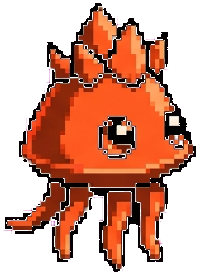
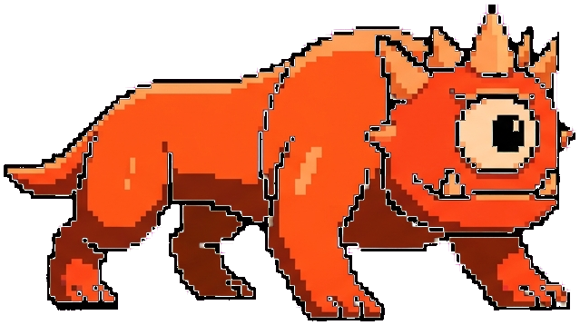
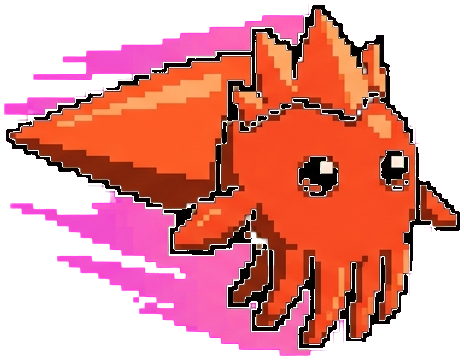
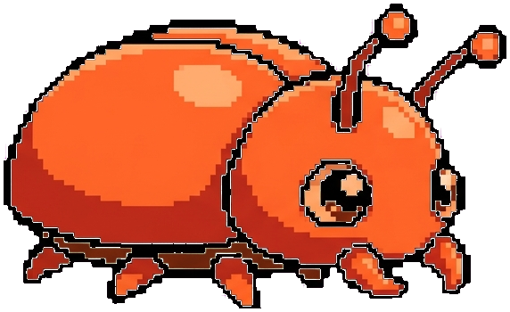
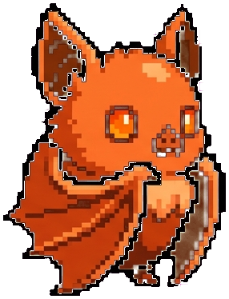
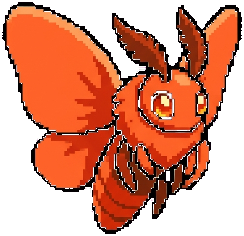
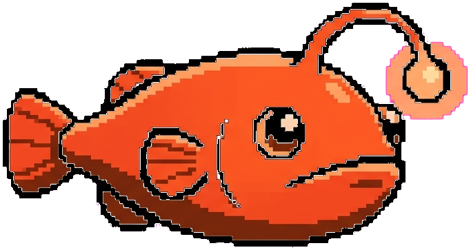
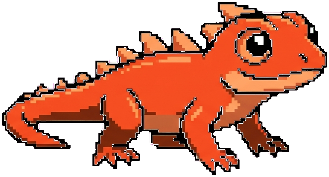
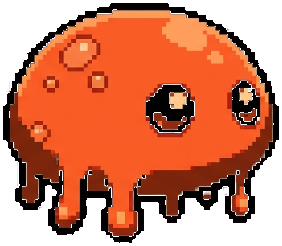

Every VIRUZ rolls one of four attributes at hatch, plus an optional Habit color/type from an equipped card. Species determines base stats, skills and the evolution line; attribute determines the stat spread and team synergy.
Attributes are rolled randomly when a VIRUZ hatches (a species can pin one with fixedAttr). They set the base stat multipliers below — colour is separate from creature identity, so a species keeps its own art regardless of which attribute it rolls.
A team of 3 counts its most common attribute:
| Matching count | Bonus |
|---|---|
| 2 of 3 share an attribute | ×1.15 to ATK / DEF / SPD |
| 3 of 3 share an attribute | ×1.30 to ATK / DEF / SPD |
Every wild AntiviruZ has a fixed Habit Color and Type — a second, independent layer on top of attributes. Killing one has a low chance (5% per kill) to drop a card named after it. Socketing that card into a VIRUZ's 4th equipment slot (Habit) grants both the color advantage and the type's unique passive — see Gear & Skills for the equip slot and the card fusion ladder (green → blue → purple).
A 4-way cycle (Green ▸ Red ▸ Yellow ▸ Blue ▸ Green, each step +20% damage) plus a separate Dark/White pair: Dark beats every other color +10% except White, which beats Dark +20% and is neutral to the four-cycle colors.
| Type | Passive |
|---|---|
| 🐾 Beast | ATK/SPD +10% when fighting another Beast or Magical Beast |
| 🐾✨ Magical Beast | ATK/SPD +18% and 15% armor penetration when fighting another Beast/Magical Beast |
| 🪲 Insect | Every 5th attack is a guaranteed critical hit |
| 🐟 Fish | EVA +12% while HP is above 50% |
| ⭐ Myth | Highest stat (ATK/DEF/SPD) +15% |
| 👺 Goblin | Guaranteed critical hit when the enemy is below 50% HP |
| 😈 Demon | Every attack has a 15% chance to inflict Corrupted on the enemy |
| 🧛 Vampire | Heals 10% of damage dealt as HP |
| 💎 Elemental | DEF +15% while HP is above 75% |
| 🧍 Humanoid | All stats +6%, always |
| 💀 Undead | Survives one otherwise-lethal hit at 1 HP, once per fight |
| 🌱 Plants | Heals 5% HP at the end of any turn it wasn't attacked |
| 🍄 Fungi | Every attack has a 12% chance to inflict 1 stack of Poison |
| ⚙️ Machine | Resists Freeze/Stoned, but takes +15% damage while Corrupted |
| 👻 Conjuration | 20% chance to take zero damage from an attack (illusion) |
| 👁️ Aberration | EVA/CRIT +12%, but DEF -10% |
| 🐉 Dragon | ATK +15% while HP is above 50%, ATK -15% once below |
| 🧚 Fey | 15% chance to Charm an attacker back when hit |
| Rarity | Stat points/level | Max level |
|---|---|---|
| Normal | ×1 | 30 |
| Rare | ×2 | 50 |
| Epic | ×3 | 70 |
| Legendary | ×4 | 90 |
| Mythic | ×5 | 120 |
A species' rarities list is the pool it can hatch into (e.g. BloByte can only be Normal/Rare/Epic; GlitchImp can reach all the way to Mythic).
Every species has a base attack, a Lv3 special, and a two-step evolution line with its own name, stat multiplier, level gate and a stronger unique special. This naming/skill ladder is layered under the universal True Form / stage-2 mutation system — reaching the level gate below unlocks the named skill regardless of which mutation (Overclock/Bulwark/Phantom/Corrupted) the pet eventually rolls.








